Administrative detaljer
Klient: Johannes Haar
Nettsidenavn: KLPP.
Kontaktperson: Johannes Haar
Oda Tillman, Sven Herman Holmsen, Maja Meland, Philip Tinius Hansen Crome, Dag Hara
IT2805 4. oktober 2020
Klient: Johannes Haar
Nettsidenavn: KLPP.
Kontaktperson: Johannes Haar
Johannes Haar har en visjon om å skape en ledende frisørkjede i Trondheim med fokus på kvalitet og service. Målet med nettsiden er å implementere denne visjonen. Den viktigste brukergruppen er kunder. Dette innebærer å lage en enkel og innbydende nettside for førstegangskunder, særlig siden frisørkjeden er i oppstartsfasen. Videre er det viktig at nettsiden klarer å visuelt forsterke profesjonaliteten som herr Haar ønsker å selge til sine kunder. Dette gjør at kunder som ønsker den ekstra kvaliteten tidlig forstår at den kan fås på KLPP. Johannes Haar er også interessert i faste kunder. Derfor må nettsiden også ha som formål å være relevant og spennende for personer som har besøkt nettsiden før. Dette skal løses ved at nettsiden viser frem det unike ved KLPP. ved hjelp av bilder og oversiktlighet ved bestillinger. Et annet viktig aspekt er å nå ut til potensielle kolleger. Herr Haar ønsker derfor at nettsiden skal være enkel og naturlig å navigere for fremtidige stylister.
Navigeringsstrukturen på KLPP. sin side er som vist på dette bildet. Hjemmesiden er den første siden som lastes når brukeren kommer inn på klpp.no. Denne hjemmesiden består av en menybar der man kan klikke på navnet på de andre referansesidene man ønsker å besøke. På menybaren er det en knapp for å bestille time, behandlinger, om oss, galleri, søk jobb og COVID-19. Alle disse sidene kan man komme seg til direkte fra hjemmesiden ved et klikk.
Denne menybaren vil være synlig øverst på hver eneste referanseside. Derfor vil det være mulig å komme seg fra hvilken som helst referanseside til en annen referanseside kun ved et klikk. Det samme gjelder når man skal komme seg tilbake til hjemmesiden. Klikker man på KLPP.-logoen vil man komme tilbake til hjemmesiden med kun et klikk.
Vi har valgt å kun ha klikketstruktur for å komme seg fra en side til en annen fordi dette er en funksjon brukeren enkelt skjønner mønsteret på og derfor blir nettsiden i seg selv enkel å bruke.
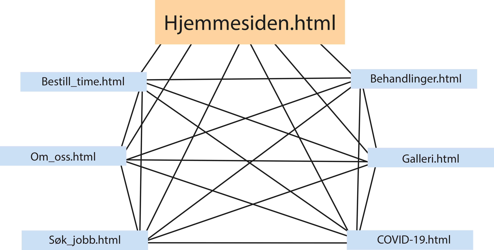 Figur 1: Navigasjonsstrukturen til KLPP. Det blir mulig å komme seg til hvilken som helst referansesider fra hvilken som helst referanseside.I planleggingen av nettsiden kom vi sammen med Herr Haar fram til at vi skulle ha et generelt fokus på minimalisme, design og funksjonalitet. Siden skal dermed være lett å navigere seg gjennom med et design som lar brukeren få seg til de delene de vil uten å bli distrahert av unødvendig rot. Dette vil vi oppnå ved bruk av en oversiktlig menybar, med få velvalgte alternativer, fonter som er lett leselige og rene, mye luft mellom objekter på skjermen og lite sterke farger. I tillegg til å være minimalistisk skal siden være inspirerende, med bruk av mange bilder, både i bakgrunn og som hovedfokus, avhengig av hvilken side du er på.
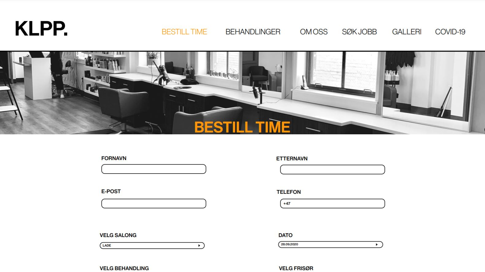 Figur 2: Designet på nettsiden. Dette deisgnet går igjen på alle de seks referansesidene utenom hjemmesiden.Under finner man en oversikt over de spesifikke valgene vi har tatt for styling av siden:
Det kommer til å være sju separate sider til klpp.no. På alle sidene vil det være en fast menybar der det blir mulig å komme seg til alle de andre referansesidene. Det vil også være en footer nederst på alle html-sidene dersom man scroller nedover på siden vil det i bunn ligge en footer med kontaktinformasjon og informasjon om åpningstider og adresser til de ulike salongene. Denne footern vil være nederst på hver referanseside om man scroller helt ned til bunnen.
Hjemmesiden og covid-19 siden vil skille seg litt ut fra de andre referansesidene. Designet på de fem andre sidene enn hjemmesiden vil være relativt likt. Når man åpner sidene vil det være et bakgrunnsbilde feste øverst rett under menybaren med overskriften for den aktuelle siden over bildet. Scroller man nedover på siden vil ikke dette følge med siden slik som menybaren vil.
Hjemmesiden er den første siden som lastes når brukeren kommer inn på klpp.no. Sentralt på siden vil det være en knapp for bestilling av timer. I bakgrunnen av siden vil det være et slideshow med bilder av forskjellige frisyrer. Siden kan også nås ved å trykke på logoen øverst i venstre hjørne.
<<<<<<< HEADSom sagt skal det her være en bestill time knapp, men utover dette vil ikke siden ha noen funksjonalitet. Hjemmesiden skal være minimalistisk, fange oppmerksomheten til brukeren og inspirere dem til å utforske mer av nettstedet. Bildene i bakgrunnen vil gjøre den mer dynamisk og bidra til å holde på oppmerksomheten til brukeren. Bildene vil være grået ut. Det er viktig at det ikke er mye rot på denne siden, sånn at man heller kan fokusere på å få seg til de delene av nettstedet man har bruk for.
Slideshowet skal oppnås ved hjelp av Javascript. Bildet som er i fokus skal være midtstilt og dekke cirka 60% av bakgrunnen, med de andre bildene på hver side. Bildene som ikke er i midten, kommer dermed til å henge ut av skjermen.
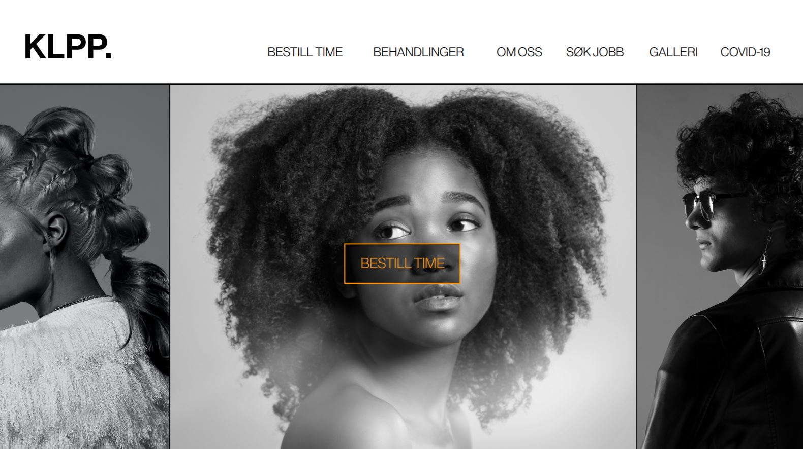 Figur 4: Bilde av forsiden. Holder man musa over en av sidene i menybaren vil teksten bli oransje. =======Som sagt skal det her være en bestill time knapp, men utover dette vil ikke siden ha noen funksjonalitet. Hjemmesiden skal være minimalistisk, fange oppmerksomheten til brukeren og inspirere dem til å utforske mer av nettstedet. Bildene i bakgrunnen vil gjøre den mer dynamisk og bidra til å holde på oppmerksomheten til brukeren. Bildene vil være grået ut. Det er viktig at det ikke er mye rot på denne siden, sånn at man heller kan fokusere seg på å få seg til de delene av nettstedet man har bruk for.
Slideshowet skal oppnås ved hjelp av Javascript. Bildet som er i fokus skal være midtstilt og dekke cirka 60% av bakgrunnen, med de andre bildene på hver side. Bildene som ikke er i midten kommer dermed til å henge ut av skjermen.
>>>>>>> 28f003aea12f6d82e5035ed5cda7e2a6c0dff673Denne siden skal være en enkel utformet form som gjør det lett å booke time. Nettsiden er hovedfokuset på referansesiden, men den skal også kunne aksesseres fra alle de andre nettsidene. Selve nettsiden skal inneholde utfyllingsbokser som gjør det naturlig for brukeren å føre inn. Kunder må starte med å fylle inn kontaktinformasjonen som fornavn, etternavn, e-post og mobilnummer. Videre på siden er det fire bokser der det er mulig å velge ulike salonger, behandlinger, datoer og frisører.
Figur 5: Slik vil bestill_time.html siden se ut når den åpnes. 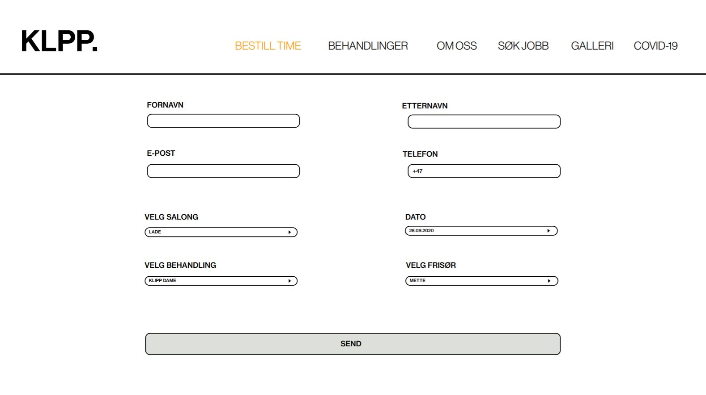 Figur 6: Scroller man litt lengre ned ser man alle utfyllingsboksene. Det som mangler på dette bildet er en checkbox som bekrefter at man har forstått Corona-restriksjonene for KLPP.Først blir kunden nødt til å åpne boksen der man velger salong. Her huker kunden av for salongen den ønsker, Tiller, Lade eller Solsiden. Videre klikker kunden på boksen behandlinger. Da vil det åpnes et vindu med en liste over de ulike alternativene for behandlinger som salongene tilbyr, kategorisert på samme måte som på siden for behandlinger. Her blir kunden nødt til å huke av for hva slags behandlinger personen ønsker. Prisen på behandlingene som hukes av blir automatisk lagt til i sluttsummen slik at kunden alltid kan se hvor mye frisørbesøket kommer til å koste.
Når de ønskede behandlingene er valgt kan estimert tid på frisørbesøket beregnes slik at kunden også kan få opp hvilke dager og tider som er ledig. Klikker kunden så på boksen med dato vil en kalender åpnes med en oversikt over ledige dager. Klikker man igjen på den ønskede dagen vil ledige tider for den valgte dagen dukke opp slik at man kan velge eksakt dato og tid selv. Etter å ha valgt frisørtime kan man også åpne den siste boksen hvor det blir mulig å huke av for hvilken frisør man ønsker seg for timen.
Før timen kan bekreftes er det viktig at kunden huker av for at den har lest og forstått bedriftens retningslinjer for covid-situasjon. Her vil det linkes til covid-nettsiden, og ved klikk på denne linken åpnes siden i et nytt vindu.
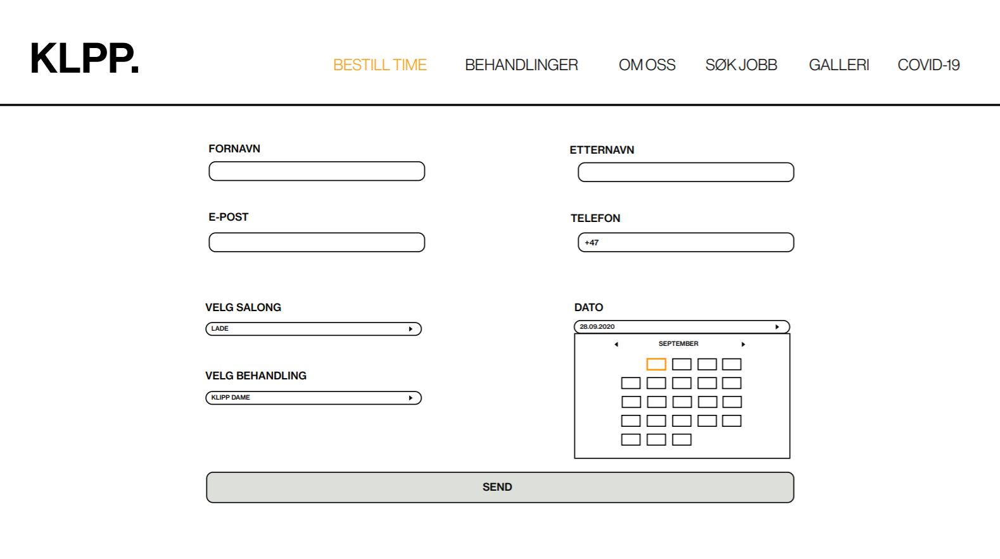 Figur 7: Et liknende vindu som vist under dato vil åpne seg under hver boks dersom man trykker på boksene.Når alt dette er gjort og man trykker send vil det komme et pop-up vindu som bekrefter din bestilling.
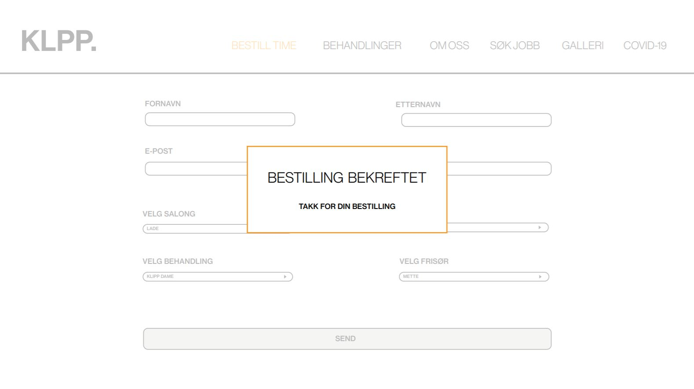 Figur 8: Etter at man har sendt inn bestillingene får man en bekreftelse som vil se ut som dette.Behandlinger er en side med oversikt over de forskjellige behandlingene KLPP. tilbyr og kan nås fra alle andre sider gjennom oversiktsmenyen.
Siden vil bestå av flere deler: Hårklipp, Farge, Skjegg og andre behandlinger. For hver av delene vil det være en overskrift, et bilde som illustrerer den relevante behandlingen, og informasjon om hva som inngår i behandlingen i tillegg til priser. For hver del vil bildet veksle mellom å være på høyre og venstre side. Overskriften skal være midtstilt, vertikalt stilt med toppen av bildene og overlappe dem. Til siden for bildene vil det være en punktliste som er ca. like høy som bildet, hvor all informasjonen om den relevante behandlingsmåten blir beskrevet.
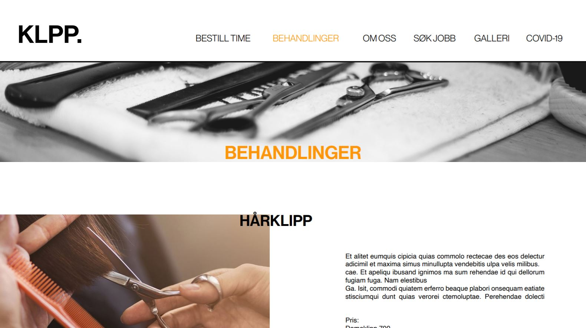 Figur 9: Slik vil behandlinger.html siden se ut når den åpnes. 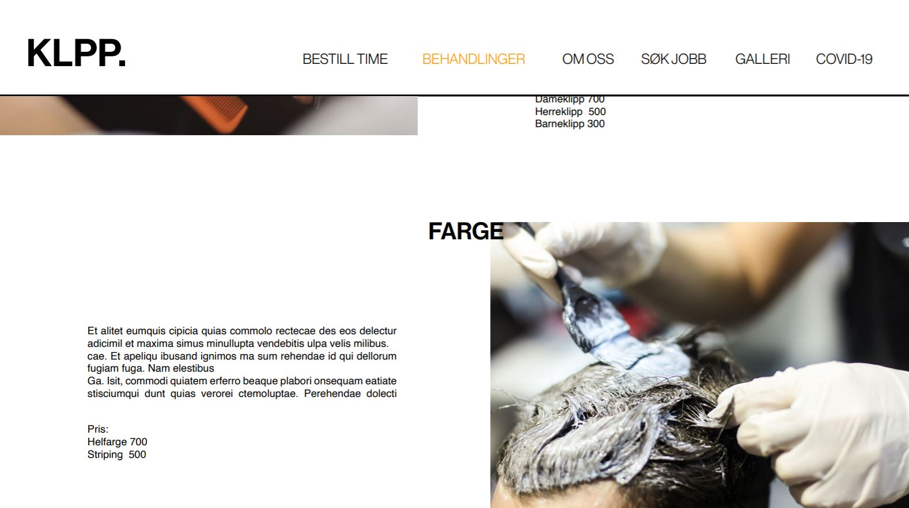 <<<<<<< HEAD Figur 10: Scroller man nedover finner man oversikt over de ulike kategoriene, hårklipp, farge, skjegg og andre behandlinger.Om oss er en side der man skal finne informasjon om historien til frisørkjeden, de ulike salongene og en oversikt over de ulike ansatte i frisørkjeden. Det første som dukker opp på denne siden er litt av historien bak frisørkjeden og litt om Johannes Haars visjon for salongene, samt et bilde og litt informasjon om Johannes Haar selv. Her vil det også være mulig å finne kontaktinformasjon til frisørkjeden.
=======Siden vil bestå av flere deler: Klipp, Farge, Skjegg og andre behandlinger. For hver av delene vil det være en overskrift, et bilde som illustrerer den relevante behandlingen, og informasjon om hva som inngår i behandlingen i tillegg til priser. For hver del vil bildet veksle mellom å være på høyre og venstre side. Overskriften skal være midtstilt, vertikalt stilt med toppen av bildene og overlappe dem. Til siden for bildene vil det være en punktliste som er ca like høy som bildet, hvor all informasjonen om den relevante behandlingsmåten blir beskrevet.
Scroller man litt videre nedover på siden vil man finne en oversikt over de ulike ansatte. Johannes Haar ønsker ikke at det skal være faste frisører som jobber i hver salong, men at alle de ansatte skal jobbe på alle salongene i Trondheim. Derfor vil dette være en oversikt over alle de ansatte, litt kort informasjon om dem, et bilde av hver enkelt frisør og informasjon om hva slags type frisør hver enkelt er og deres spesialiteter.
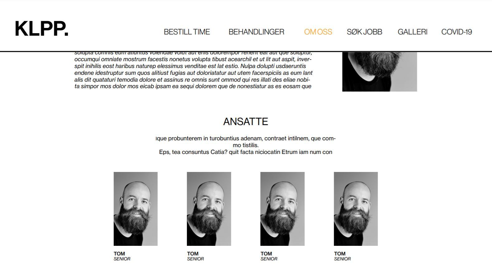 Figur 12: Scroller man litt ned finner man en oversikt over de ansatte.Videre nedover på siden har Johannes et ønske om at kundene enkelt skal finne frem til beliggenheten til de ulike salongene. Derfor tenker vi å sette inn et kart der alle frisørsalongene er markert på kartet. Dersom man holder musen over en av frisørsalongene på kartet og trykker vil man automatisk hoppe litt lengre ned på siden til mer informasjon om akkurat den ønskede salongen, enten Tiller, Lade og Solsiden.
Denne informasjonen blir da også mulig å finne lengre ned på siden dersom man scroller seg videre nedover. Der vil det være mulig å finne åpningstider og adresser for hver enkelt salong. Vi tenker også å sette inn bilder av fasadene til hver enkelt salong slik at det skal være enklere for nye kunder å finne frem.
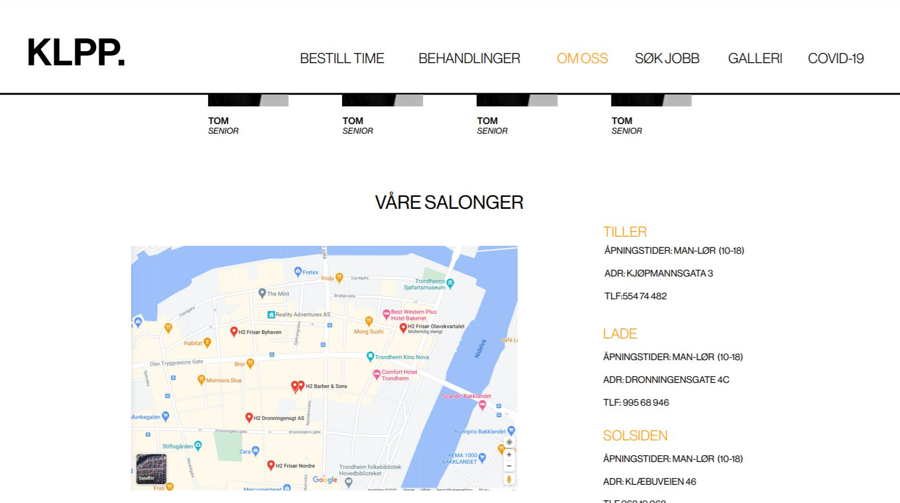 Figur 13: Scroller man enda lengre ned finner man informasjon om de ulike salongene. Først et kart, så litt mer informasjon om hver salong, Tiller, Lade og Solsiden.Siden KLPP. er en helt nyoppstartet frisørkjede er Johannes fremdeles på jakt etter flere ansatte. På denne siden ønsker han derfor å fortelle litt om hvordan det er å jobbe som frisør i KLPP. og hvilke forventninger han har til sine ansatte.
 Figur 14: Slik vil nesten søk_jobb.html siden se ut når den åpnes. Johhanes Haar ønsker å legge til litt informasjon om stillingen som er utlyst over der man kan sende inn søknad.
Figur 14: Slik vil nesten søk_jobb.html siden se ut når den åpnes. Johhanes Haar ønsker å legge til litt informasjon om stillingen som er utlyst over der man kan sende inn søknad.
Om man skal sende inn en søknad skriver man fornavn, etternavn, e-post og telefonnummer direkte inn i feltene på sidene. Søknaden skriver man også direkte inn på siden. CV blir det mulig å laste opp på siden. Som på siden for å bestille time vil det også her komme opp et pop-up vindu som bekrefter din søknad.
 Figur 15: Scroller man litt nedover får man opp alle feltene man skal fylle inn.
Figur 15: Scroller man litt nedover får man opp alle feltene man skal fylle inn.
 Figur 16: Trykker man på send vil man få opp en bekreftelse som denne.
Figur 16: Trykker man på send vil man få opp en bekreftelse som denne.
Dette skal være en side med bilder tatt på de ulike salongene til KLPP. Her er det både bilder av resultater av ulike behandlinger og bilder av frisørene i aksjon. Her kan kundene gå inn å se hva frisørene kan og hente inspirasjon til hva som kan gjøres hos KLPP. Her vil det brukes et grid der det er tre bilder i bredden, men med ulik høyde. Dersom man ønsker å se bildet i full størrelse klikker man på thumnailen og det vil komme et pop-up vindu med det ønskede bildet i full størrelse. For at det ikke skal bli for mye forstyrrelser rundt når man ser på det ene bildet tenker vi at bakgrunnen blir litt grået ut.
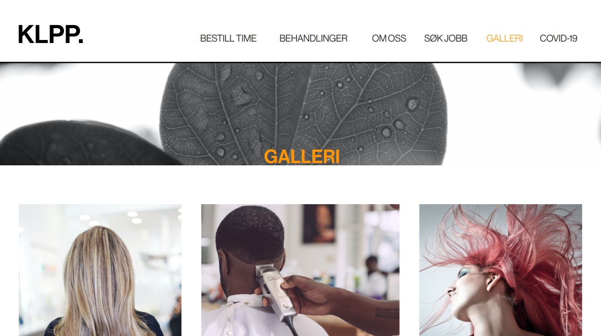 Figur 17: Slik vil galleri.html siden se ut når den åpnes. 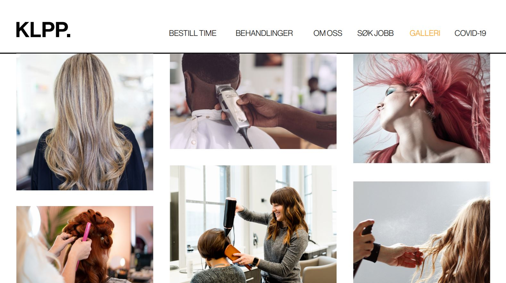 Figur 18: Scroller man videre vil det bare være mer bilder. Klikker man på en av bildene får man det i full størrelse.Klipping er en service med menneskelig kontakt. Dette gjør at frisørkjeden er direkte påvirket av befolkningens smitte og myndighetenes restriksjoner. Derfor er det viktig at denne nettsiden viser oppdatert informasjon om hvordan covid-situasjonen påvirker bedriften i nåtid samt hvordan det kan bli fremover. Denne nettsiden må også vise når nettsiden sist ble oppdatert for å trygge besøkende og vise at bedriften er årvåken og følger situasjonen tett.
Nettsiden skal vise hva bedriften gjør for å trygge sine kunder. Samtidig så skal nettsiden informere om hva kunder må gjøre for å oppholde seg på bedriftens områder. For at klippetimer skal skje er det viktig at begge parter samarbeider for at servicen overlever krisesituasjonen. Dette samarbeidet er tuftet på tillit, og en informativ og enkel nettside med viktigste informasjon først er med på å skape denne tilliten.
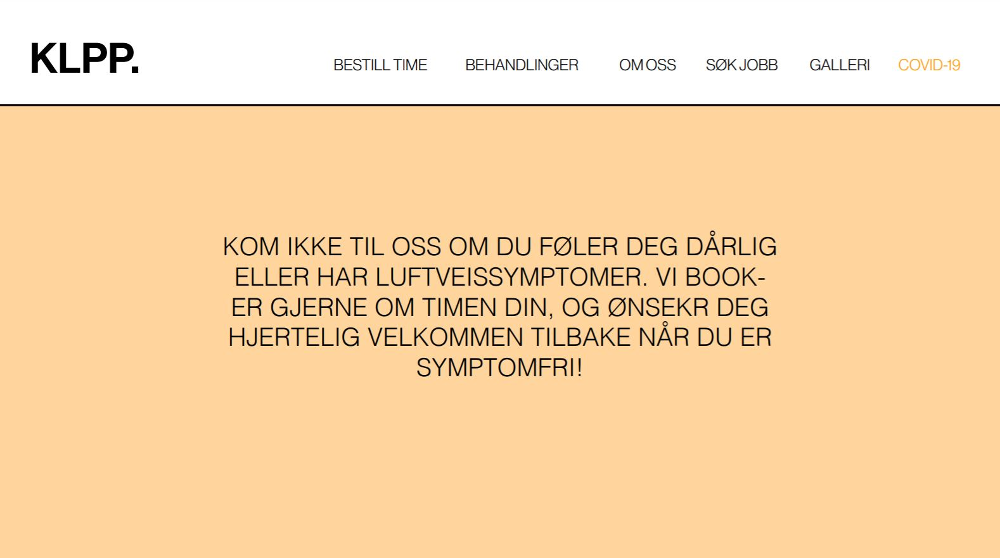 Figur 19: Slik vil covid_19.html siden se ut når den åpnes. En annen bakgrunnsfarge enn resten for å fremheve viktigheten med denne siden. 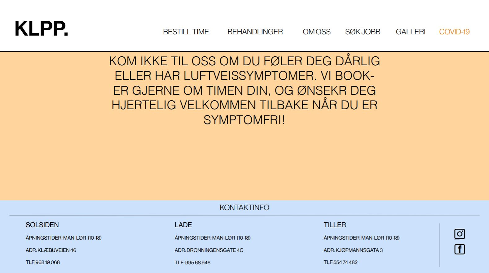 Figur 20: Scroller man nedover på alle sidene er det en footer som vil slik ut, med kontaktinformasjon og informasjon om hver salong.Ved hjelp av en javascript funksjon skal bildet i bakgrunnen på forsiden tilfeldig rotere gjennom et galleri. Ved å se et utvalg av forskjellige frisyrer og stiler vil brukeren forhåpentligvis bli mer inspirert til å bestille en time hos KLPP. og dette kan deretter lett utføres ved å trykke på bestill time knappen på samme side. Javascriptet vil bruke random math til å velge blant de forskjellige bildene i galleriet.
I bestill time delen av siden får man blant annet opp en liste over de forskjellige behandlingene KLPP. tilbyr. Når man huker av de forskjellige alternativene skal siden, ved hjelp av en javascript funksjon, gi brukeren totalprisen live under alternativene. Dette vil hjelpe til med å etablere tillit mellom brukere og frisøren, og vil gi siden et mer profesjonelt preg.
I Galleri-siden skal det være en javascript funksjon som lager et pop-up vindu som viser full størrelse på bilde når thumbnailen blir klikket. På galleri-siden vil det være mange bilder som skal inspirere kunder til ulike hårfrisyrer og behandlinger. For å vise variasjon er det ønskelig med flere bilder i mindre format så det blir plass til flere bilder på nettsiden. Når et bilde er valgt til å vise full størrelse er det ønskelig at det er en grået bakgrunn for å fremheve pop-up vinduet.
Når bruker fyller inn en bestilling er det viktig at man får en feedback på at nettsiden har akseptert søknaden. Denne bekreftelsen skal bli vist til brukeren slik at brukeren er trygg på at bestillingen har gått gjennom systemet. Når brukeren har fylt ut bestillingssiden og trykker bestill så skal nettsiden refreshe og vise en tom bestillingsside. Samtidig skal det komme et pop-up vindu som viser at bestillingen er bekreftet. En grået bakgrunn er ønskelig for å tydeliggjøre pop-up vinduet. Når brukeren lukker vinduet kan man starte på en ny bestilling siden nettsiden er tilbakestilt til normaltilstanden (default).
Når en jobbsøker fyller inn formet er det viktig at det blir gitt tydelig feedback på at KLPP. har mottatt søknaden. Denne bekreftelsen er viktig fordi det gir søkeren en trygghet på at innsendingen er akseptert. Ved innsending så skal siden tilbakestilles til normaltilstanden, og det skal komme et pop-up vindu som sier at innsendingen er mottatt. Det skal også være en grået bakgrunn for å fremheve pop-up vinduet.
Den følgende organisatoriske planen viser hovedpunktene av hva vi skal lage. Merk at vi vet foreløpig ikke hvor mange bilder vi skal hente til vårt galleri så vi har satt en tentativ liste på 30 bilder. Dette kan endres. Filmappene og filene er logisk delt inn og det er satt av personer til de ulike oppgavene med en foreløpig frist for hver oppgave.
| Filnavn | Beskrivelse | Ansvarlig | Frist |
|---|---|---|---|
| hjemmeside.html | Hovedside med bestill time knapp og tilfeldige bilder bak. | Maja | 16.10.2020 |
| bestill_time.html | Side med timebestilling og live priskalkulator. Bekreftelse når man har bestilt. | Maja | 23.10.2020 |
| om_oss.html | Side med kort historie om kjeden, oversikt over ansatte og lokasjoner. | Oda | 16.10.2020 |
| søk_jobb.html | Levere inn CV og skrive inn søknad. | Oda | 23.10.2020 |
| galleri.html | Galleri med bilder av forskjellige frisyrer og farger. Thumbnails blir store bilder. | Dag | 16.10.2020 |
| behandlinger.html | Oversikt over forskjellige behandlinger med beskrivelser og priser. | Philip | 16.10.2020 |
| covid_19.html | Informasjon om COVID-19 og hvordan KLPP. forholder seg til situasjonen. | Sven | 16.10.2020 |
| logo.png | Må lage en logo for KLPP. | Dag | 16.10.2020 |
| favicon.png | Må lage en favicon som er K. | Dag | 16.10.2020 |
| menybar | Lage en felles modular menybar som brukes til alle sidene. | Maja | 16.10.2020 |
| footer | lage en felles modular footer som brukes til alle sidene. | Philip | 16.10.2020 |
| random_images.js | JavaScript som lar forsiden rotere mellom tilfeldige bakgrunnsbilder. | Philip | 23.10.2020 |
| priskalkulator.js | JavaScript som gjør det mulig å kalkulere totalprisen når man bestiller. | Oda | 23.10.2020 |
| image_size.js | JavaScript som gjør at man får fullsize bilder når man trykker på thumbnails i galleri. | Dag | 23.10.2020 |
| bestillingsbekreftelse.js | JavaScript som gir deg en bekreftelse når du har bestilt en time. | Sven | 23.10.2020 |
| Søknadsbekreftelse.js | JavaScript som gir deg en bekreftelse når du har sendt søknad. | Sven | 23.10.2020 |
| style.css | Å style alle html-sidene vil være noe alle må bidra med. | Alle | 23.10.2020 |